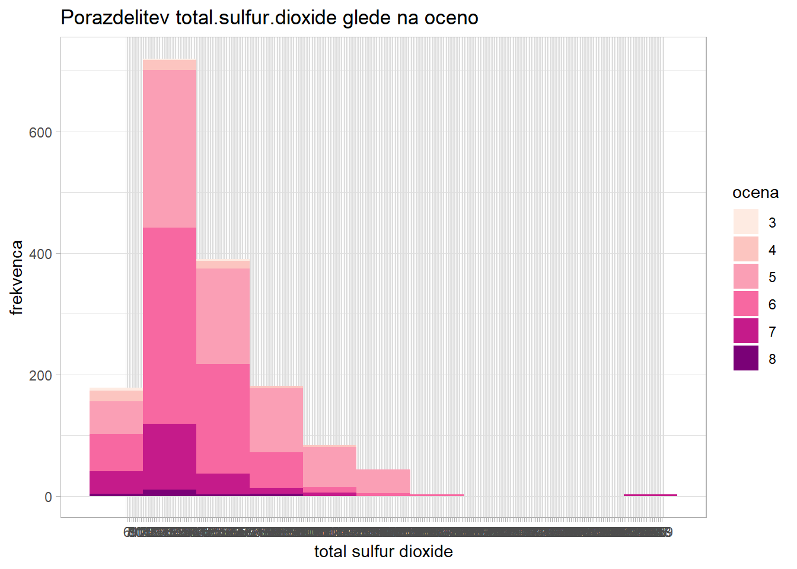
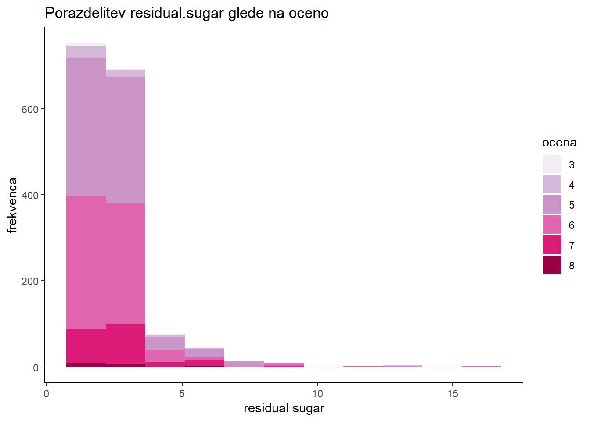
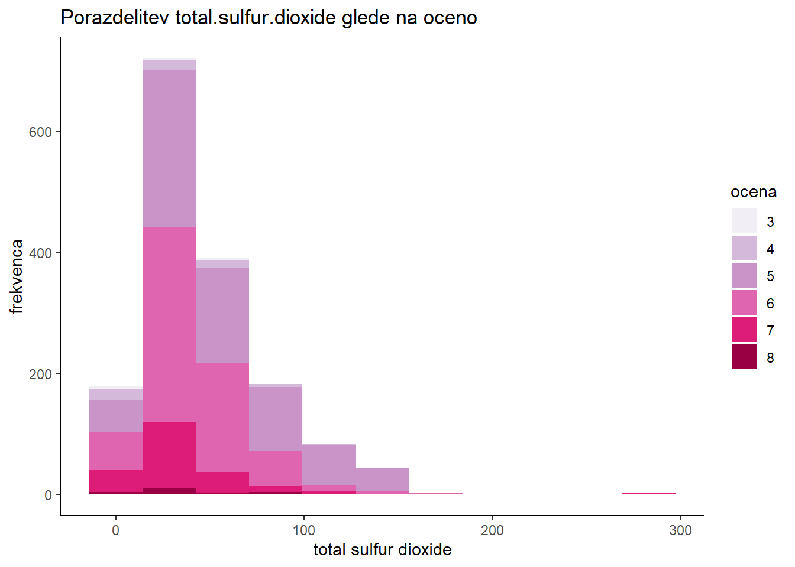

library(tidyverse)
library(ggplot2)
library(gridExtra)Domača naloga - Rdeče vino
Statistika 2024/25
Uvod
Kvaliteta vina je odvisna od številnih dejavnikov, od sort grozdja z različnimi lastnostmi, do vinarskih postokov uporabljenih za njegovo predelovanje. Analiza kakovosti vina je pomembna tako za potrošnike, saj jim tako pomaga pri izbiri vina ter pri proizvjalacih, ki lahko na podlagi rezultatov analiz ugotovijo, katere tehnike pridelovanja, sorte grozdja in podobno vpliva na kakovost vina.
V tem poročilu so predstavljene statistične analize podatkov kakovosti rdečega vina. Namen naloge je pripraviti poročilo, ki poda odgovore na vseh 5 zastavljenih vprašanj, ki se osredotočajo na kemijse lastnosti in njihov vpliv na kakovost vina. Uporabljati je bilo potrebno program R. Pri vsakem vprašanju je podan opis problema, opis uporabljenih statističnih metod za analizo problema ter rezultati analize in njihova interpretacija.
Podatki
Uporabljeni paketi
Za delo s podatki sem uporabljal paket tidyverse, ki je ustvarjen za delo s podatkovnimi okvirji ter ggplot2 in gridExtra za kvalitetne vizualne predstavitve distiliranih podatkov.
Branje podatkov
Podatki so shranjeni tako v csv kot v xlsx obliki. Odločil sem se, da bom uporabil podatke iz csv datoteke, saj za branje ni potrebna uporaba dodatnih paketov.
df <- "winequality-red.csv" |>
read.csv(sep = ";") |>
as_tibble()Predstavitev podatkov
Podatkovni okvir vsebuje različne kemijske lastnosti vin ter končno oceno kakovosti ocenjevalcev vina. Sestavljen je iz 1599 vrstic z 12 numeričnimi spremenljivkami.
manjkajoče vrednosti
map_df(df, \(col){
is.na(col) |>
grep(pattern = "TRUE") |>
length()
}) |>
pivot_longer(cols = everything(df)) %>% {
names(.) <- c("spremenljivka", "NA")
.
}# A tibble: 12 × 2
spremenljivka `NA`
<chr> <int>
1 fixed.acidity 0
2 volatile.acidity 0
3 citric.acid 0
4 residual.sugar 0
5 chlorides 0
6 free.sulfur.dioxide 0
7 total.sulfur.dioxide 0
8 density 0
9 pH 0
10 sulphates 0
11 alcohol 0
12 quality 0Podatki so že očiščeni, zato dodatno delo ni potrebno.
naključni vzorec velikosti 5
df |> slice_sample(n = 5) |> knitr::kable()| fixed.acidity | volatile.acidity | citric.acid | residual.sugar | chlorides | free.sulfur.dioxide | total.sulfur.dioxide | density | pH | sulphates | alcohol | quality |
|---|---|---|---|---|---|---|---|---|---|---|---|
| 7.1 | 0.350 | 0.29 | 2.5 | 0.096 | 20 | 53 | 0.99620 | 3.42 | 0.65 | 11.0 | 6 |
| 6.6 | 0.855 | 0.02 | 2.4 | 0.062 | 15 | 23 | 0.99627 | 3.54 | 0.60 | 11.0 | 6 |
| 7.8 | 0.520 | 0.25 | 1.9 | 0.081 | 14 | 38 | 0.99840 | 3.43 | 0.65 | 9.0 | 6 |
| 11.9 | 0.430 | 0.66 | 3.1 | 0.109 | 10 | 23 | 1.00000 | 3.15 | 0.85 | 10.4 | 7 |
| 7.1 | 0.590 | 0.00 | 2.2 | 0.078 | 26 | 44 | 0.99522 | 3.42 | 0.68 | 10.8 | 6 |
povzetek podatkov
sapply(df[names(df)], summary) |> knitr::kable()| fixed.acidity | volatile.acidity | citric.acid | residual.sugar | chlorides | free.sulfur.dioxide | total.sulfur.dioxide | density | pH | sulphates | alcohol | quality | |
|---|---|---|---|---|---|---|---|---|---|---|---|---|
| Min. | 4.600000 | 0.1200000 | 0.0000000 | 0.900000 | 0.0120000 | 1.00000 | 6.00000 | 0.9900700 | 2.740000 | 0.3300000 | 8.40000 | 3.000000 |
| 1st Qu. | 7.100000 | 0.3900000 | 0.0900000 | 1.900000 | 0.0700000 | 7.00000 | 22.00000 | 0.9956000 | 3.210000 | 0.5500000 | 9.50000 | 5.000000 |
| Median | 7.900000 | 0.5200000 | 0.2600000 | 2.200000 | 0.0790000 | 14.00000 | 38.00000 | 0.9967500 | 3.310000 | 0.6200000 | 10.20000 | 6.000000 |
| Mean | 8.319637 | 0.5278205 | 0.2709756 | 2.538806 | 0.0874665 | 15.87492 | 46.46779 | 0.9967467 | 3.311113 | 0.6581488 | 10.42298 | 5.636023 |
| 3rd Qu. | 9.200000 | 0.6400000 | 0.4200000 | 2.600000 | 0.0900000 | 21.00000 | 62.00000 | 0.9978350 | 3.400000 | 0.7300000 | 11.10000 | 6.000000 |
| Max. | 15.900000 | 1.5800000 | 1.0000000 | 15.500000 | 0.6110000 | 72.00000 | 289.00000 | 1.0036900 | 4.010000 | 2.0000000 | 14.90000 | 8.000000 |
Lahko opazimo, da se pojavijo samo ocene med 3 in 8 ter da je povprečna ocena \(\approx 5.5\). Spodaj je opis vseh spremenljivk.
| spremenljivka | tip | opis |
|---|---|---|
| fixed.acidity | numerični | kislost vina |
| volatile.acidity | numerični | hlapna kislost vina |
| citric.acid | numerični | vsebnost citronske kisline |
| residual.sugar | numerični | vsebnost sladkorja |
| chlorides | numerični | vsebnost kloridov |
| free.sulfur.dioxide | numerični | vsebnost prostega žveplovega dioksida |
| total.sulfur.dioxide | numerični | celotna vsebnost žveplovega dioksida |
| density | numerični | gostota vina |
| pH | numerični | pH nivo vina |
| sulphates | numerični | vsebnost sulfatov |
| alcohol | numerični | odstotek alkohola |
| quality | numerični | ocenjena kvaliteta vina |
Naloga 1.
Grafično prikažite porazdelitev spremenljivk kislost, sladkor ter celoten žveplov dioksid. Grafično prikažite še porazdelitev kvalitete vseh vin. Narišite še histograme, ki prikazujo porazdelitev kislosti glede na kvaliteto vina. Interpretirajte rezultate.
Opis problema
V prvi nalogi se osredotočamo na raziskovanje porazdelitve nekaterih kemijskih lastnosti rdečega vina - kislost vina, vsebnost sladkorja ter celotna vsebnost žveplovega dioksida. Predstavljene so tudi porazdelitve kvalitet vseh ocenjenih vin, preko česar bomo lahko dobili idejo, kako vplivajo te lastnosti na njihovo kakovost.
Opis uporabljenih statističnih metod
Porazdelitve podatkov so predstavljene s histogrami. Za boljšo oceno števila intervalov/razredov sem uporabil Sturges pravilo, ki se poenostavi v formulo \(k = 1 + \log_2(n)\), kjer je \(k\) število intervalov in \(n\) skupno število elementov. Znotraj vsakega histograma je prikazana tudi porazdelitev ocen vina znotraj dane spremenljivke.
V pomoč sem si ustvaril funkcijo quality_histogram, ki prikaže podano spremenljivko col iz podatkovnega okvirja df s histogramom. Za število razredov uporabi vrednost bins_ocena, izračunano s Sturgesovim pravilom. Kot fill parameter vzame quality_factor, kjer so vrednosti spremenljivke quality.
n <- nrow(df)
bins_ocena <- floor(1 + log2(n))
quality_factor <- factor(df$quality)quality_histogram
quality_histogram <- function(df, col) {
ggplot(df, aes(x = unlist(select(df, all_of(col))), fill = quality_factor)) +
geom_histogram(bins = bins_ocena) +
labs(
title = paste("Porazdelitev", col, "glede na oceno"),
x = gsub(pattern = "\\.", replacement = " ", x = col),
y = "frekvenca",
fill = "ocena"
) +
scale_fill_brewer(palette = "PuRd") +
theme_classic()
}Prav tako sem ustvaril tri funckije, s katerimi bom predstavil mere centralne tendence ali mere variabilnosti neke spremenljivke glede na njeno simetrično ali asimetrično porazdelitev.
asim_summary
asim_summary <- function(df, col) {
selected <- select(df, all_of(col))
unpacked <- unlist(selected)
selected |> summarise(
"min" = min(unpacked),
"1. kvartil" = quantile(unpacked, 0.25),
"mediana" = median(unpacked),
"3. kvartil" = quantile(unpacked, 0.75),
"IQR" = IQR(unpacked),
"max" = max(unpacked),
) |>
knitr::kable()
}sim_summary
sim_summary <- function(df, col) {
selected <- select(df, all_of(col))
unpacked <- unlist(selected)
selected |> summarise(
"modus" = names(which.max(table(factor(unpacked)))),
"aritmetična sredina" = mean(unlist(unpacked)),
"standardni odklon" = sd(unlist(unpacked)),
) |>
knitr::kable()
}Za vsako spremenljivko sem podal tudi ustrezne mere centralne tendence, primerne za tip porazdelitve (bodisi simetrična ali asimetrična).
Rezultati in njihova interpretacija
Porazdelitev ocen vina
graf
ggplot(df, aes(x = quality)) +
geom_bar() +
labs(
title = "Porazdelitev ocen",
x = "ocena",
y = "frekvenca"
) +
theme_classic()
Porazdelitev ocen je precej simetrična, kar pomeni, da ni (veliko) osamelcev. Zaradi tega je primerno podati mere centralne tendence - artimetična sredina, modus in standardni odklon.
sim_summary(df, "quality")| modus | aritmetična sredina | standardni odklon |
|---|---|---|
| 5 | 5.636023 | 0.8075694 |
Najbolj pogosta ocena je 5, razpršenost podatkov pa je tudi precej majhna.
Kislost vina
Opazno je, da je za spremenljivko fixed.acidity (kislost vina) porazdelitev nekoliko asimetrična desno.
graf
quality_histogram(df, "fixed.acidity")
Zaradi asimetrične porazdelitve so primerne statistične mere mere variabilnosti - mediana, interkvartilni razmik ter prvi in tretji kvartil, saj so bolj robustne in neobčutljive na osamelce, ki so razlog za asimetrične porazdelitve.
asim_summary(df, "fixed.acidity")| min | 1. kvartil | mediana | 3. kvartil | IQR | max |
|---|---|---|---|---|---|
| 4.6 | 7.1 | 7.9 | 9.2 | 2.1 | 15.9 |
Opazno je, da se z večjo oceno poveča tudi mediana, kar lahko implicira na korelacijo med oceno in kislostjo vina. dodaj nek reference kako je kislost pomebna za kakovost vina.
Iz spodnje tabele je opazno, da je ocene vin precej enakomerno porazdeljene. Višje ocene so malo bolj pogoste, kar lahko pomeni, da so proizvajalci imeli dobro letino.
povzetek podatkov kislosti vina glede na ocene
select(df, quality, fixed.acidity) |>
group_by(quality) |>
summarise(
"1. kvartil" = quantile(fixed.acidity, 0.25),
"mediana" = median(fixed.acidity),
"3. kvartil" = quantile(fixed.acidity, 0.75),
"IQR" = IQR(fixed.acidity)
) |>
rename(ocena = quality) |>
knitr::kable()| ocena | 1. kvartil | mediana | 3. kvartil | IQR |
|---|---|---|---|---|
| 3 | 7.15 | 7.50 | 9.875 | 2.725 |
| 4 | 6.80 | 7.50 | 8.400 | 1.600 |
| 5 | 7.10 | 7.80 | 8.900 | 1.800 |
| 6 | 7.00 | 7.90 | 9.400 | 2.400 |
| 7 | 7.40 | 8.80 | 10.100 | 2.700 |
| 8 | 7.25 | 8.25 | 10.225 | 2.975 |
Visoki IQR vrednosti za oceni 3 in 8 lahko pojasne majhna količina podatkov za ti oceni, 10 in 18 opažanj, kar je malo v primerjavi z ostalimi.
quality_factor |> summary() 3 4 5 6 7 8
10 53 681 638 199 18 Vsebnost sladkorja
Porazdelitev vsebnosti sladkorja je zelo asimetrična v desno. Večina vrednosti je med 0 in približno 5. To se sklada s podatki ki sem jih dobil na tej speltni strani o tem da mora met vino toliko sladkorja ker to pomeni da je ok al neki, najdi reference.
graf
quality_histogram(df, "residual.sugar")
Tu so predstavljene mere variabilnosti za dano spremenljivko. Iz IQR vrednosti je res razvidno, da je večina podatkov skoncentriranih med 1. in 3. kvartilom, torej med \(\approx 2\) in \(2.5\).
asim_summary(df, "residual.sugar")| min | 1. kvartil | mediana | 3. kvartil | IQR | max |
|---|---|---|---|---|---|
| 0.9 | 1.9 | 2.2 | 2.6 | 0.7 | 15.5 |
To lahko pomeni, da višja koncentracija sladkorja v vinu ni pogosta, saj popači njegov okus. Glede na spodnjo tabelo je razvidno, da so ocene ponovno simetrično porazdeljene, vse z mediano približno \(2.2\). Velika IQR vrednost za oceno 3 pa je verjetno spet odvisna od majhne količine podatkov z oceno 3.
povzetek podatkov vsebnosti sladkorja v vinu glede na ocene
select(df, quality, residual.sugar) |>
group_by(quality) |>
summarise(
"1. kvartil" = quantile(residual.sugar, 0.25),
"mediana" = median(residual.sugar),
"3. kvartil" = quantile(residual.sugar, 0.75),
"IQR" = IQR(residual.sugar)
) |>
rename(ocena = quality) |>
knitr::kable()| ocena | 1. kvartil | mediana | 3. kvartil | IQR |
|---|---|---|---|---|
| 3 | 1.875 | 2.1 | 3.10 | 1.225 |
| 4 | 1.900 | 2.1 | 2.80 | 0.900 |
| 5 | 1.900 | 2.2 | 2.60 | 0.700 |
| 6 | 1.900 | 2.2 | 2.50 | 0.600 |
| 7 | 2.000 | 2.3 | 2.75 | 0.750 |
| 8 | 1.800 | 2.1 | 2.60 | 0.800 |
Celotna vsebnost žveplovega dioksida
Spremenljivka celotne vsebnosti žveplovega dioksida je prav tako v desno asimetrično porazdeljena.
graf
quality_histogram(df, "total.sulfur.dioxide")
Zaradi tega bom predstavil njene mere variabilnosti.
asim_summary(df, "total.sulfur.dioxide")| min | 1. kvartil | mediana | 3. kvartil | IQR | max |
|---|---|---|---|---|---|
| 6 | 22 | 38 | 62 | 40 | 289 |
Iz njih lahko razberemo, da ima večina vin celotno vsebnost žveplovega dioksida nekje med 22 in 62. Žal nimam enot, a lahko trdim, da to v primerjavi z največje izmerjeno vsebnostjo 289 ni precej velika vrednost.
To lahko pomeni, da so vina s manjšo vsebnostjo žveplovega dioksida bolj razširjena ali pa imajo vina s manjšo vsebnostjo boljši okus in so zato bolj pogosta.
povzetek podatkov celotne vsebnosti žveplovega dioksida v vinu glede na ocene
select(df, quality, total.sulfur.dioxide) |>
group_by(quality) |>
summarise(
"1. kvartil" = quantile(total.sulfur.dioxide, 0.25),
"mediana" = median(total.sulfur.dioxide),
"3. kvartil" = quantile(total.sulfur.dioxide, 0.75),
"IQR" = IQR(total.sulfur.dioxide)
) |>
rename(ocena = quality) |>
knitr::kable()| ocena | 1. kvartil | mediana | 3. kvartil | IQR |
|---|---|---|---|---|
| 3 | 12.5 | 15.0 | 42.5 | 30.0 |
| 4 | 14.0 | 26.0 | 49.0 | 35.0 |
| 5 | 26.0 | 47.0 | 84.0 | 58.0 |
| 6 | 23.0 | 35.0 | 54.0 | 31.0 |
| 7 | 17.5 | 27.0 | 43.0 | 25.5 |
| 8 | 16.0 | 21.5 | 43.0 | 27.0 |
Ocene so ponovno precej enakomerno porazdeljene glede na vrednosti spremenljivke. Malo več jih je skoncentriranih okoli srednjih vrednosti za oceno, 5 in 6, kar je razvidno iz mediane in IQR.
Morda so ugotovili optimalno vsebovanost žveplovega dioksida
Naloga 2.
Izpišite kvartile in standardni odklon za spremenljivko “kislost” ter narišite okvir z ročaji. Enako naredite še za spremenljivki “sladkor” in “celoten žveplov dioksid”. Interpetirajte rezultate.
Naloga 3.
Zanima nas, ali je povprečna kislost vin, ki so dobila oceno 5, višja kot povprečne kislosti vin z oceno 6. Katerega od statističnih testov bi uporabili in kakšen je vaš zaključek? Z ustreznim statističnim testom preverite še hipotezo, da je povprečna vsebnost sladkorja vseh izbranih vin večja od 2,3. Interpretirajte rezultate.
Naloga 4.
Za vsako od dvanajstih zgoraj omenjenih spremenljivk preverite, ali so podatki skladni z normalno porazdelitvijo. Če da, podajte parametre teh porazdelitev.
Naloga 5.
Po lastni izbiri postavite vsaj še eno raziskovalno vprašanje in nanj natančno odgovorite.